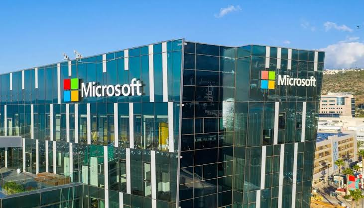

Bangalore is India's premier technology hub, fueling roughly 40% of the country's IT exports and employing over 4 million professionals across more than 1,000 firms. The ecosystem is dominated by three main types of organizations.IT Service Giants: Headquartered locally like Infosys and Wipro, or boasting large campuses like Tata Consultancy Services (TCS), Accenture, and Capgemini. They remain the largest volume hirers, offering entry-level packages typically ranging from ₹3.5 to ₹8 LPA.Global Capability Centers (GCCs): R&D and engineering hubs for international tech giants such as Google, IBM, and SAP Labs. They generally offer higher compensation (₹8 to ₹22+ LPA for fresh graduates) and focus on product innovation.

Google's primary corporate campus in Bengaluru is Ananta, located in the Mahadevapura / Krishnarajapuram area on the eastern side of the city. Spanning 1.6 million square feet, it is Google's largest office space in India and accommodates over 5,000 employees working across AI, Cloud, and Engineering.Open Roles: Google routinely hires for engineering, product management, and cloud positions in Bengaluru.Job Board: To explore current opportunities and filter by experience level or work mode (hybrid, on-site).
Microsoft

Microsoft’s primary presence in the city is the Microsoft India Development Center (MSIDC), located at Prestige Ferns Galaxy, Ambalipura, Outer Ring Road, Bellandur, Bengaluru – 560103. This major R&D hub drives core engineering, technology solutions, and global delivery, with local job openings often requiring 1-3 days in-office per week.Microsoft Research (MSR) India: Focuses on cutting-edge research in machine learning, artificial intelligence, and computer systems.Customer Service and Support (CSS): Provides technical enterprise and customer support globally.
Amazon

Amazon has a massive presence in Bengaluru, serving as its newly established India headquarters and housing its second-largest office campus in all of Asia. The tech giant hosts over 2,000+ open job roles in Bengaluru across tech, retail, and corporate operations.Beyond software engineering and AWS, Amazon manages a robust physical logistics network in the city.
flipkart
Flipkart is an Indian e-commerce company headquartered in Bengaluru, Karnataka. Its primary corporate portal and online shopping destination is the Flipkart Homepage. For corporate information, news, and history, visit the Flipkart Stories Portal or the Flipkart Corporate Page.